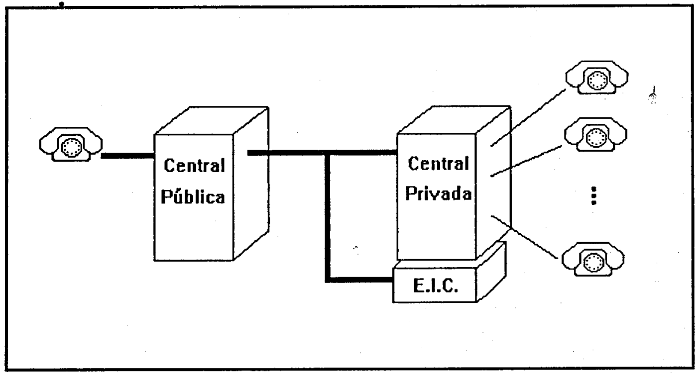

Bachelor thesis Electronics Engineering ISDN PBX Siemens by Alejandro Avella Universidad Simón Bolívar
Posted on February 1994

DESIGN AND CONSTRUCTION OF A COMPUTING PULSE EMULATOR (CPE) FOR TELEPHONE TARIFFS
By
Alejandro Esteban Avella Pérez
Academic Tutor: Prof. Calogero Brunscianelli
Industrial Tutor: Eng. Fernando Consalvo
Company: SIEMENS S.A. Communications and Data Division
ABSTRACT
In this project, a prototype device was designed and built that emulates the computing pulses used for telephone pricing in Venezuela. The objective of this development is to increase the number of charging-related features that can be leveraged in the different models of SIEMENS private telephone exchanges, which directly depend on the reception of computing pulses for their operation. The Computing Pulse Emulator (CPE) is controlled by the INTEL 8031 microprocessor and has a monitoring capacity of up to 24 landlines, which covers the requirements of small and medium-capacity SIEMENS central offices. The equipment is programmable through a PC's serial port using a program designed to run under WINDOWS. The programmable parameters are: the frequency of the computing pulses (50 Hz, 12 kHz, or 16 kHz), the number of lines to be served (8, 16, or 24), the CANTV tariff tables, and the time and date.
The CPE will allow the commercialization of other SIEMENS PABX features not previously used in Venezuela (because public telephony generally does not offer computing signals to regular subscribers). Among the features activated by the central offices are the following: the display of call costs on the digital telephone display screen as calls are made, and the more accurate recording of outgoing calls.
Additionally, and as a separate chapter, the design of a "Home Telephone Rate Calculator" (TTC) is presented, which would record calls made at home or in a small establishment.
Download PDF